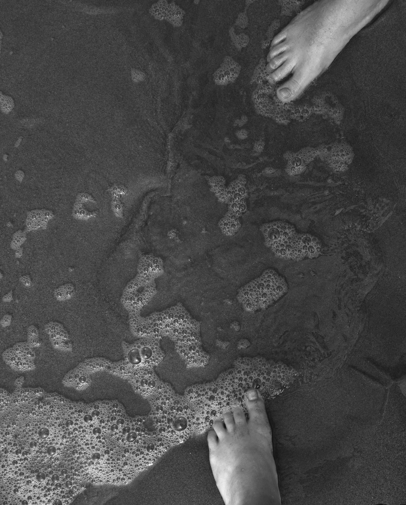
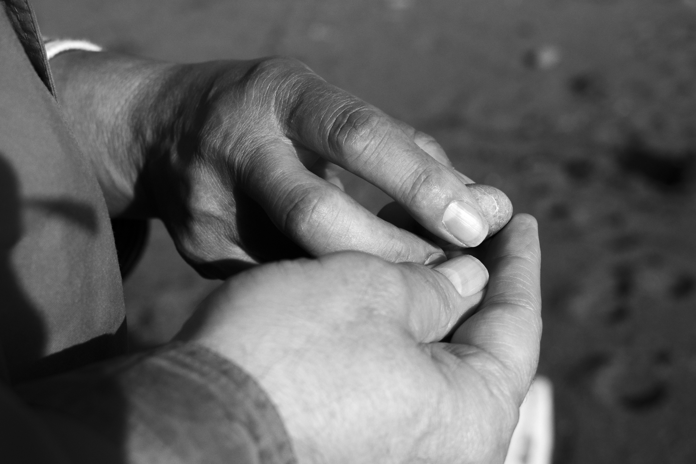

Picturing the Self
by Sosofarsosofie
Nikon D3400
"Picturing the Self" is another class project. This assignment was much more personal and allowed more creative freedom.
My first photo is my only picture with my face in it. It was taken at the Jade Festival in Big Sur, CA. My family has been going to this event for years now and it a source of many of my fond memories. I was looking in a display case when I saw the mirror. This photo not only shows me, but also one of my personal interests; which makes it more intimate.
Family has always been important to me, so it was important to me that I capture it in some way for this assignment. My second photo depicts the hands of my mother and father. Its a tender moment that captures the love and kindness of my family. I wanted the lighting to reflect this feeling as well. Parents teach children to be the best parts of them. Hopefully I show the love and tenderness I captured in this photo.
The last photo is a combination of a family tradition and sisterhood. My family is not fond of taking pictures of themselves. So instead of taking pictures of our faces, we take pictures of our shoes or feet. Whenever we are somewhere new or came home, we would take these pictures. Its one of our more strange traditions but its also unique. My sister and I decided to walk on the beach by ourselves. We like having moments away from the rest of the family, especially since I moved away. It was a time for us to catch up and have fun like we used to. In the photo, my sister's foot is on the opposite part of the picture plane, symbolizing the distance between us. Even tho we are so far apart, we are still connected.
Big Sur October,2018
Monterey October,2018

Jade Festival October, 2018